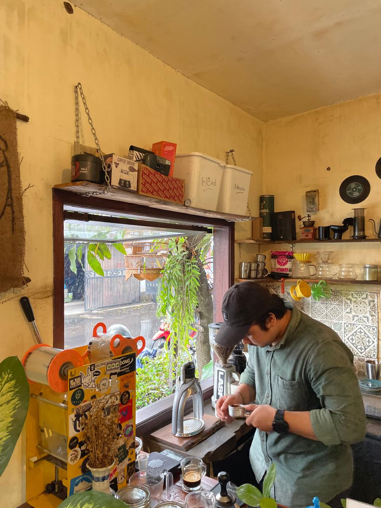
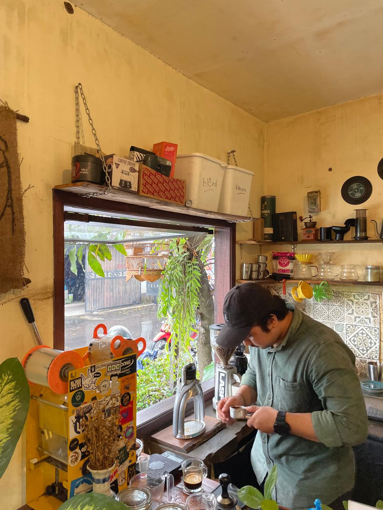

2020 - Selak masuk dunia perkopian ditengah pandemi covid 19 diawali berjualan dengan membuat produk kopi susu botol dengan 4 varian rasa yang berbeda melalui sosial media dengan sistem pre-order, yang berjalan selama antara 3-4 bulan saja. Dengan modal yang ada, Kak Shania selaku ownernya menyewa tempat yang dijadikan kedai pertamanya di daerah Distrik Kopi Sudimoro dengan jangka waktu hanya 7 bulan.
2021 - Selak akhirnya pindah ke Jalan Karya Timur yang sampai sekarang di tempati, dengan konsep yang naik dan berbeda dari sebelumnya. Meskipun bukan kedai kopi pertama dengan konsep pinggir rel, Selak mampu melakukan perombakan hingga jadi kedai baru dengan konsep kedai dipinggir rel juga yang lebih minimalis.
2024 - Selak telah menginjak tahun ke 5nya dan masih berdiri dengan konsumen yang semakin beragam dari mulai pekerja, mahasiswa, hingga kalangan pelajar yang datang untuk menikmati sensasi kedai kopi pinggir rel yang berbeda dengan yang lainnya.
Note : Tidak tersedia stopcontact di area outdoor, Minim lahan parkir untuk mobil, Tidak ada working place.
Kedai kopi dengan Vietnam vibes ditemani view kereta api seperti di Hanoi
 

Jl. Karya Timur No.24, Purwantoro, Kec. Blimbing, Kota Malang, Jawa Timur 65126
⭐ Jam 05.00 & 12.00 WIB
⭐ Jam 16.00, 16.30, 17.30 WIB
⭐ Jam 18.00 & 19.00 WIB
Note : Untuk info jadwal kereta yang lebih akurat dapat dicek melalui KAI DAOP 8 SURABAYA-MLG